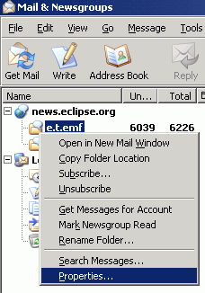
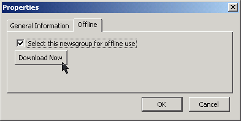
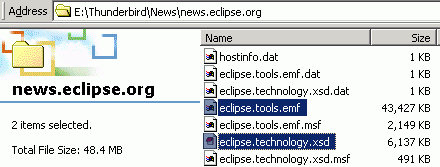
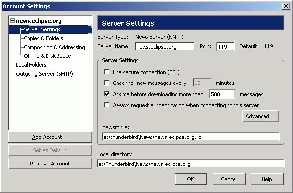
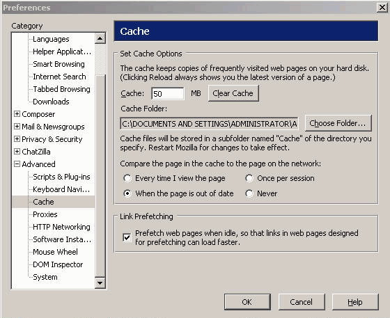
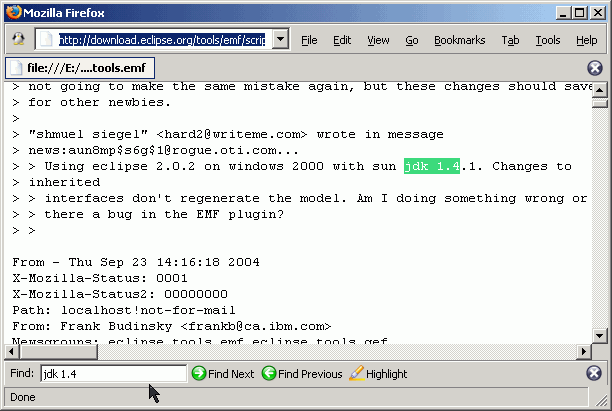

Summary
In this article you will learn how to export the contents of an Eclipse.org newsgroup for offline searching, using Mozilla Thunderbird and Firefox.
Last update: Sept. 27, 2004.
| Step 0: | Prerequisites |
| Step 1: | Initiate Offline Download |
| Step 2: | Searching the Downloaded Newsgroup Posts |
This walkthrough uses two open-source, free products in concert to collect the newsgroup data and then search it. You can get Mozilla Thunderbird and Mozilla Firefox from Mozilla.org, or you can use Netscape 7 or Mozilla Suite.
For details on using Outlook Express for offline newsgroup searching, click here.
You will also require a browser, textfile reader, text editor, or other software than contains a search feature and can handle LARGE files (ie., over 30M of text).
Once Thunderbid is installed, launch it. For more details on how to set up a connection to news://news.eclipse.org, read this.
To extract the contents of your chosen newsgroup for offline reading, right-click that newgroup, and select 'Properties...'.

Select the 'Offline' tab, check the box for 'Select this newsgroup for offline use', and then click 'Download Now'.

Note that depending on the size of the newsgroup, this could take some time. At the time of writing, the eclipse.tools.emf newsgroup contained over 6000 posts, which took just under 40 mins to download. The eclipse.technology.xsd newsgroup, with over 1000 posts, took 6 minutes. Resulting files are shown here:

If you're using Thunderbird, your data is stored in your 'Local directory' folder. To determine where this folder is, or to change it, select 'Account Settings' from the 'Tools' menu. Expand the twisty beside your mail server (eg., news.eclipse.org) and select 'Server Settings'.

If you're using Mozilla, your data is stored in your cache folder. To determine where this folder is, or to change it, select 'Preferences' from the 'Edit' menu. Expand the twisty beside 'Advanced' and select 'Cache'.

Open the downloaded files in your browser or text editor of choice. Below is an example of searching through the file with Firefox.

Conclusion
In this article, we provided an overview of using Thunderbird to download the contents of an eclipse.org newsgroup for offline searching.